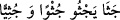
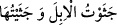
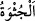

28. O gün her ümmeti, diz çökmüş görürsün. Her ümmet kendi kitabına çağırılır,
(onlara şöyle denilir:) «Bu gün, yaptıklarınızla cezalandırılacaksınız!»
“O gün” mümin, kâfir “her ümmeti (Allah’ın huzûrunda)” o günün dehşet ve
azametinden hesap ve sorgulama anında huzursuz ve endişeli olarak “diz çökmüş”
vaziyette toplanmış “görürsün.”
Hiçbir ümmet sorgulama anında kendisinden emîn değildir. “ denilir
ki “dizleri üzere oturdu yahut ayak parmakları üzere dikildi” demektir.
İbn Abbâs’tan rivâyet edildiğine göre “câsiye”, “toplanmış” demektir. Yâni hiç bir
ümmet başka bir ümmetle karışmaz. “ denilir ki “develeri topladım”
demektir. “, “toplu şey” demektir. Şâyet “diz çökme işi kâfirlere layık bir
durumdur, müminlerin kıyâmette bir korku ve endişeleri yoktur. Neden diz çöksünler”
denirse, cevap şudur: Emîn olan kimse haklı olduğu ve hak ettiği emân ortaya çıkıncaya
kadar bazan böyle bâtıldan yana olanlara ortak olur.
Ka’b (r.a.), emîru’l-müminîn Hz. Ömer (r.a.)’e şöyle demiştir: “Kıyâmet günü
cehennemin bir soluk alması vardır ki; mânen Allah’a çok yakın olan mukarreb bir
melek yahut insanlara gönderilmiş bir peygamber, kim olursa olsun herkes diz üstü
çöker. Hatta Allah dostu Halil İbrahim (a.s.) bile, “Ya Rabbi! Bugün senden yalnız
nefsimi istiyorum” der.
Şeyh Sa’dî şöyle demiştir:
Kıyâmet günü herkese sözünden, işinden sorarlar.
Ülü’l-azm peygamberlerin bile korkudan vücudları titrer.
Bir yerde ki peygamberler bile dehşette kalırlar.
Sen ne yapacaksın? Günahlarını ne ile mâzur göstereceksin?
“Her ümmet, kendi Kitabına”, amel defterine “çağırılır”, onlara “Bugün
yaptıklarınızla cezâlandırılacaksınız!” denilir. Kimin ameli, îmân ise cennetle
ödüllendirilir. Kimin ameli, şirk ve küfürse, cehennemle cezalandırılır.
Makam, tehdid ve uyarı makamı olduğu için bu ifâde tekrar edilmiştir. Burada kitap
kelimesinin ümmete râcî olan zamire muzâf olması aradaki mülâbesetten dolayı
mecâzdır. Çünkü onların amelleri kitapta tespit edilmiş ve yazılmıştır.
Âyette şuna işâret edilmektedir: Kullar âciz olup Allah Teâlâ’nın ezelde onlar için
takdir edip yazdığı dışında kulların ciddî bir tasarrufları yoktur. Kullara dünya ve
âhirette onların sabit ayanlarına göre takdir edilip yazılan dışında bir şey isabet etmez.
Kullar işlerini ancak kaza ve kader çizgisi istikâmetinde icrâ ederler.
Hâfız şöyle demiştir:
Bu çemende beni kendiliğinden yetişmekle kınama
Şöyle ki beni yetiştirirler, ben de biterim.
Peygamberimiz (s.a.) şöyle buyurmuştur: “Kıyâmet günü îmân ve şirk Allah’ın